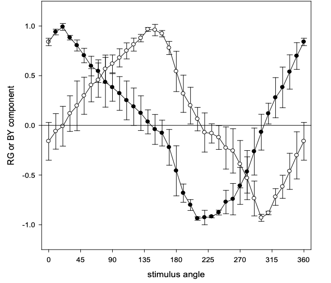

Fundamentally different representations of color and motion revealed
by individual differences in perceptual scaling
Emery, K., Volbrecht, V., Peterzell, D., Webster, M.
(2023). Proceedings of the National Academy of Sciences.
[paper]
[data and code]
Gaining the system: Limits to compensating color deficiencies through
post-receptoral gain changes
Emery, K., Isherwood, Z., Webster, M.
(2023). Journal of the Optical Society of America, A.
[paper]

OpenNEEDS: A dataset of gaze, head, hand, and scene signals
during exploration in open-ended VR environments
Emery, K., Zannoli, M., Warren, J., Xiao, L., Talathi, S.
(2021). ACM Symposium on Eye Tracking Research and Applications.
[paper]
[data]
Color perception and compensation in color deficiencies assessed with
hue scaling
Emery, K., Parthasarathy, M, Joyce, D., Webster, M.
(2021). Vision Research.
[paper]
Comparison of two methods of hue scaling
Matera, C., Emery, K., Volbrecht, V., Vemuri, K., Kay, P., Webster, M.
(2020). Journal of the Optical Society of America, A.
[paper]
Individual differences and their implications for color perception
Emery, K., Webster, M.
(2019). Current Opinion in Behavioral Sciences.
[paper]

Variations in normal color vision. VI. Factors underlying individual
differences in hue scaling and their implications for models of color appearance
Emery, K., Volbrecht, V., Peterzell, D., Webster, M.
(2017). Vision Research.
[paper]
Variations in normal color vision. VII. Relationships between color naming and hue scaling
Emery, K., Volbrecht, V., Peterzell, D., Webster, M.
(2017). Vision Research.
[paper]